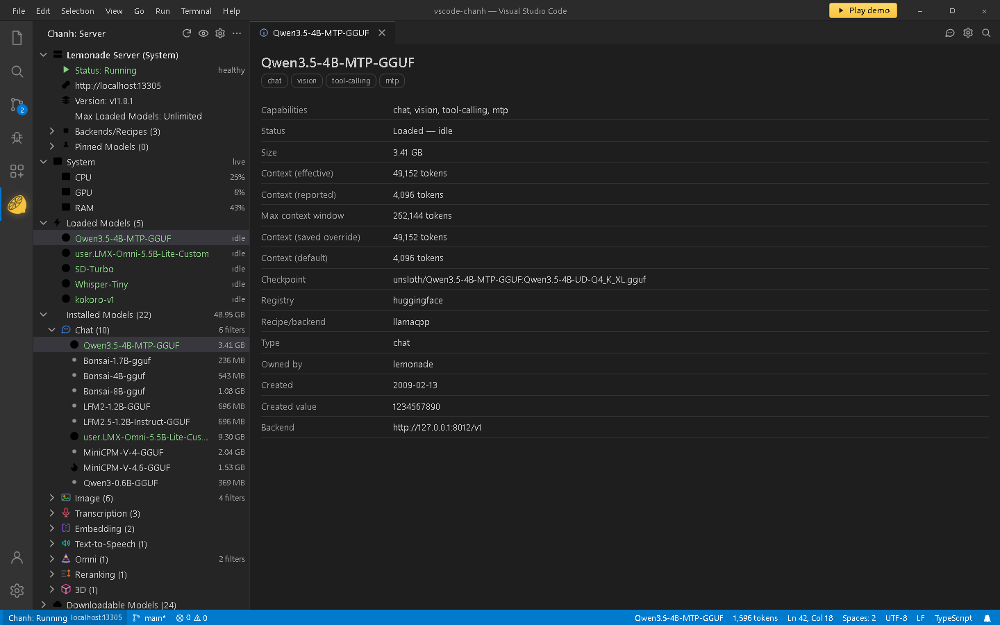

VS Code extension · Local inference
Chanh /ch-ahn/
Chanh downloads, hosts and runs a Lemonade Server locally, then exposes the models it serves to VS Code. It is an integration layer for the editor: server lifecycle, model management, chat, agent mode and runtime visibility. Model execution is handled by Lemonade.
0.1.4
VS Code ≥ 1.140
MIT
Windows · macOS · Linux
The extension contributes a Chanh activity-bar view (CHANH_SIDEBAR → CHANH_TREEVIEW),
a Model Info webview, the @chanh chat participant, and a VS Code language-model provider registered
under the chanh vendor. In LEMONADE and LEMOND modes, prompts and code stay
on the machine.
Chanh has no account, no hosted inference and no cloud fallback. Requests go only to the configured Lemonade endpoint. A CUSTOM URL is the exception — traffic goes wherever you point it.
At a glance
| Extension ID | lanly-dev.chanh |
|---|---|
| Publisher | lanly-dev |
| Version | 0.1.4 |
| Engine | ^1.140.0 |
| Activation | onStartupFinished |
| Chat participant | CHANH_CHAT — @chanh |
| Model provider | VS Code language-model vendor chanh |
| Repository | lanly-dev/lemond |
Architecture #
Chanh sits between VS Code and Lemonade Server. The server exposes an OpenAI-compatible HTTP API; the extension translates that API into tree data, webviews, chat responses and VS Code language-model parts.
Process model
| Component | Source | Responsibility |
|---|---|---|
| ServerManager | src/serverManager.ts | Active server, health, ports and lifecycle. Starts/stops only the managed lemond process. |
| LemonadeClient | src/lemonadeClient.ts | HTTP and wire-format translation for health, models, system info, pull, load, unload and options. |
| ModelManager | src/modelManager.ts | Downloads, load/unload, context-size overrides, backend selection, model info and endpoint configuration. |
| ServerViewProvider | src/serverTreeview.ts | Tree model, section state, capability grouping, filters and persisted view preferences. |
| ChanhLmcProvider | src/lmcProvider.ts | VS Code LanguageModelChatProvider used by the native model picker and agent mode. |
| ChatParticipant | src/chatParticipant.ts | @chanh, slash commands, streaming responses and token usage. |
| SystemMonitor | src/systemMonitor.ts | CPU, GPU and memory sampling for the sidebar System group. |
| BinaryManager | src/binaryManager.ts | Download and update of the managed lemond binary. |
Data flow
- The selected server mode resolves a base URL — system Lemonade, managed
lemond, or a custom URL. /v1/healthand/v1/modelspopulate the tree./v1/system-infosupplies recipes and backend install state.- Loading, unloading, pulling and context/backend changes are sent to the server; the tree reflects the returned state.
- Chat and native model requests stream from Lemonade and are translated into VS Code response parts.
External servers (LEMONADE, CUSTOM) are connected to, not terminated, when the extension deactivates.
Requirements #
| Editor | VS Code 1.140 or newer. |
|---|---|
| Platform | Windows, macOS or Linux. Lemonade must support the selected backend on that platform. |
| Server | A running Lemonade Server (system install), the managed lemond binary, or a reachable custom URL. |
| Network | Required to download the server binary and models. Not required for inference once the model is local. |
| Hardware | CPU is sufficient. CUDA, Vulkan or ROCm can be selected for supported recipes. Model weights need disk space. |
| Licenses | The extension is MIT. Each model has its own license; review it before downloading. |
Chanh does not bundle model runtimes. Available backends and model recipes come from the installed Lemonade Server and the platform it runs on.
Installation #
Install from the Marketplace, Open VSX, or the VS Code CLI:
code --install-extension lanly-dev.chanh- Open the Chanh icon in the activity bar.
- Choose the server mode.
LEMONADEconnects to an existing system server;LEMONDlets Chanh manage its binary;CUSTOMuses a configured URL. - Download or load a chat-capable model from the tree.
- Type
@chanhin chat, or select a Chanh model in the native picker for agent mode.
The default server mode is LEMONADE on port 13305. See Configuration to change it.
Server modes #
Server selection is controlled by chanh.serverMode. The tree always shows the active server only.
| Mode | Default URL | Lifecycle | Use when |
|---|---|---|---|
LEMONADE | http://localhost:13305 | External; Chanh connects only | You already run Lemonade Server system-wide. |
LEMOND | http://localhost:8000 | Managed by Chanh | You want the extension to download, start and stop the bundled binary. |
CUSTOM | Configured URL | External; Chanh connects only | The server runs elsewhere or on a non-default host/port. |
Ports are configured with chanh.lemonadePort and chanh.lemondPort. The managed binary
is stored in global storage and can be revealed from the server header context actions.
Start Server and Stop Server only control the managed lemond process. In LEMONADE and CUSTOM modes, manage the server outside Chanh.
Model lifecycle #
The tree is a view over the active server. Sections collapse and expand independently; grouping and filters are persisted per workspace.
Tree sections
| Section | Content |
|---|---|
| Server | Status, URL, version, maximum loaded models, backends/recipes and pinned models. |
| System | CPU, GPU and memory samples. Only rendered while the configured endpoint is local; cadence is chanh.systemSampleInterval. |
| Loaded Models | Models currently resident in the server, with idle/busy state. |
| Downloading Models | Active pulls and locally tracked partial downloads. Progress is streamed from /v1/pull. |
| Installed Models | Downloaded models, grouped by capability or shown flat. Load, inspect, tune, or remove. |
| Downloadable Models | Catalog from the server. A hot-only filter and sub-capability filters are available. |
States and actions
| State | Meaning | Available actions |
|---|---|---|
| Downloadable | Known to the catalog but not on disk. | Download; inspect metadata. |
| Installed | Weights are on disk, not loaded. | Load, show info, select backend, remove. |
| Loaded | Resident in the server; may be idle or busy. | Unload, show info, add to chat endpoints. |
| Partial | An interrupted pull tracked by the extension. | Retry or remove the partial file. |
Downloads are extension-owned: progress comes from the streaming pull response and incomplete pulls are persisted in workspace state. This means a download started by another client, or completed while VS Code was closed, is not reconciled automatically.
Capability labels
Labels come from the server and drive grouping, filters and picker eligibility. Matching is case-insensitive.
| Label | Behavior |
|---|---|
chat / llm | Makes a model eligible for chat. The two labels are treated as equivalent. |
tool-calling | Required for the model to appear in the native picker for agent mode. |
vision | Adds image-attachment support in chat and the picker. |
embeddings, reranking | Grouped under their capability categories. |
transcription, tts, image, 3d | Grouped by capability; exposed according to the server's recipes. |
omni | Multi-modality collection. Listed in its own group and in other matched groups. |
hot | Highlights suggested/hot models in the downloadable catalog. |
Context and backend
- Context size — presets from 8K to 128K, Automatic (
-1), or a custom value. Saved per model as actx_sizerecipe option. - Backend — selected per recipe (for example CPU, CUDA, Vulkan). The choice is remembered for every model using that recipe.
- Model Info — capabilities, status, size, effective/reported/default context, maximum window, checkpoint, registry, recipe, owner, creation data and the live backend endpoint.
Server endpoints used
| Endpoint | Used for |
|---|---|
/v1/health | Status, loaded models, busy/streaming state and pinned models. |
/v1/models | Catalog, labels, sizes, download status and model metadata. |
/v1/system-info | Recipes, backend install state and backend/device information. |
/v1/pull | Streaming model download progress. |
/v1/load · /v1/unload | Model residency. |
/v1/models/{model}/options | Saved, effective and default recipe options for context and backend. |
Configuration #
| Setting | Default | Description |
|---|---|---|
chanh.chatModel | (unset) | Model used by @chanh. Empty prompts for a model. |
chanh.customServerUrl | (unset) | URL used when chanh.serverMode is CUSTOM. |
chanh.lemonadePort | 13305 | Port for the system-installed Lemonade Server. |
chanh.lemondPort | 8000 | Port for the managed lemond binary. |
chanh.maxLoadedModels | (unset) | Maximum number of loaded models. Use -1 for unlimited. |
chanh.serverMode | LEMONADE | LEMONADE, LEMOND or CUSTOM. |
chanh.showTokenStats | false | Show per-turn token counts from the model's usage block. |
chanh.systemSampleInterval | 5 | Seconds between CPU/GPU/RAM samples. |
Example settings
{
"chanh.serverMode": "LEMONADE",
"chanh.lemonadePort": 13305,
"chanh.chatModel": "Qwen3.5-4B-MTP-GGUF",
"chanh.showTokenStats": true,
"chanh.systemSampleInterval": 5
}Chat and agent mode #
There are two integration surfaces. Both use the active Lemonade server and the selected model.
| Surface | Behavior |
|---|---|
@chanh participant | Sends the request directly to Lemonade, streams the reply and supports /fix and /explain. Uses chanh.chatModel or prompts for a chat model. |
| Native model picker | Registers a VS Code language-model provider under Chanh 🍋. Lists chat models that also advertise tool-calling; vision models accept images. |
| Agent mode | VS Code orchestrates the loop. Chanh forwards tool definitions and translates tool calls; tools are not executed by the provider. |
@chanh /explain- Model selection —
chanh.chatModelremembers the model used by@chanh. Leave it empty to be prompted. - Token stats — enabled by
chanh.showTokenStats; the final stream chunk supplies prompt/completion counts. - Vision — labels containing
visionexpose image attachments in the picker. - Custom endpoint — the command Add Entry to VS Code's Chat Custom Endpoints writes a single loaded model into
chat.customEndpoints.
Once the server and weights are present locally, inference does not require a network connection. Model selection and chat both use the local endpoint.
Commands #
Chanh: commands are available in the command palette. Item commands (chanh.ncp.*) appear in model context menus or inline hover actions and may be hidden from the palette.
Server and setup
| Command | Action |
|---|---|
chanh.startServer | Start the managed server. |
chanh.stopServer | Stop the managed server. |
chanh.switchServer | Switch the active server mode. |
chanh.refreshServer | Refresh server status and model data. |
chanh.editServerPort | Edit the port or custom URL. |
chanh.openServerUrl | Open the active server URL. |
chanh.downloadBinary | Download or update the managed binary. |
chanh.setMaxLoadedModels | Set the server's loaded-model limit. |
chanh.selectChatModel | Select and load a model for chat. |
chanh.openSettings | Open VS Code settings filtered to Chanh. |
chanh.openLmConfigsFile | Open the chat language-models configuration. |
chanh.ncp.revealBinaryDir | Reveal the managed binary folder. |
Model actions
| Command | Action |
|---|---|
chanh.ncp.downloadModel | Pull a downloadable model. |
chanh.ncp.cancelDownload | Cancel an active pull. |
chanh.ncp.loadModel | Load an installed model. |
chanh.ncp.unloadModel | Unload a loaded model. |
chanh.ncp.removeModel | Delete a model from disk. |
chanh.ncp.showModelInfo | Open the Model Info webview. |
chanh.ncp.copyModelId | Copy the model identifier. |
chanh.ncp.setModelContext | Set a context-size override. |
chanh.ncp.resetModelContext | Reset the context override. |
chanh.ncp.selectBackend | Choose the backend for the model's recipe. |
chanh.ncp.uninstallBackend | Uninstall a backend. |
chanh.ncp.configLmEndpoint | Add a loaded model to VS Code chat endpoints. |
View and filtering
| Command | Action |
|---|---|
chanh.ncp.toggleModelSectionsHide | Hide Installed and Downloadable sections. |
chanh.ncp.toggleModelSectionsShow | Show Installed and Downloadable sections. |
chanh.ncp.toggleModelGrouping | Group installed models by capability. |
chanh.ncp.toggleDlModelGrouping | Group downloadable models by capability. |
chanh.ncp.toggleHotModels | Show only hot downloadable models. |
chanh.ncp.filterCapGroup | Filter a capability group by sub-capability. |
chanh.ncp.clearCapFilter | Clear a capability filter. |
Demo and mockup #
Supplementary material for evaluating the UI. Neither asset is required for the extension.
UI walkthrough
A 1:57 narrated tour of the server tree, model actions, Model Info, context/backend pickers and settings. The MP4 is intentionally not committed.

Interactive · simulatedUI mockup
A self-contained browser mockup of the extension. It uses simulated models and downloads and does not connect to Lemonade.
Open the mockupDevelopment #
Extension
npm install
npm run watch
# press F5 → Extension Development Hostnpm run check-types runs the TypeScript compiler, npm run lint runs ESLint, and npm run package type-checks, lints and builds. npm run vsce-package packages a VSIX.
Website
python -m http.server 8000 --directory websiteThe site is static. The GitHub Actions workflow publishes the website/ directory to Pages; Pages must be enabled with Source: GitHub Actions.
Repository layout
src/
├─ extension.ts activation and command wiring
├─ serverManager.ts server modes, health and lifecycle
├─ lemonadeClient.ts HTTP client and wire types
├─ modelManager.ts download, load, context, backend
├─ serverTreeview.ts sidebar tree and persistence
├─ lmcProvider.ts native language-model provider
├─ chatParticipant.ts @chanh and slash commands
├─ systemMonitor.ts CPU / GPU / RAM sampling
└─ binaryManager.ts managed lemond binary
website/
├─ index.html this documentation page
├─ styles.css
├─ site.js
├─ demo/ poster + notes (MP4 excluded)
└─ mockup/ interactive UI mockupLicense #
Chanh is released under the MIT License. Model weights and third-party runtimes keep their own licenses.
Chanh is not affiliated with Microsoft. VS Code is a trademark of Microsoft Corporation.